<!DOCTYPE html>


<html lang="zh-CN">


<head>
  <meta charset="utf-8" />
    
  <meta name="viewport" content="width=device-width, initial-scale=1, maximum-scale=1" />
  <title>
    吴恩达CS229机器学习笔记-上 |  VincereZhou&#39;s blog
  </title>
  <meta name="generator" content="hexo-theme-ayer">
  
  <link rel="shortcut icon" href="/images/mojie.jpg" />
  
  
<link rel="stylesheet" href="/dist/main.css">

  <link rel="stylesheet" href="https://cdn.jsdelivr.net/gh/Shen-Yu/cdn/css/remixicon.min.css">
  
<link rel="stylesheet" href="/css/custom.css">

  
  <script src="https://cdn.jsdelivr.net/npm/pace-js@1.0.2/pace.min.js"></script>
  
  

  

<link rel="alternate" href="/atom.xml" title="VincereZhou's blog" type="application/atom+xml">
</head>

</html>

<body>
  <div id="app">
    
      
    <main class="content on">
      <section class="outer">
  <article
  id="post-吴恩达CS229机器学习笔记-上"
  class="article article-type-post"
  itemscope
  itemprop="blogPost"
  data-scroll-reveal
>
  <div class="article-inner">
    
    <header class="article-header">
       
<h1 class="article-title sea-center" style="border-left:0" itemprop="name">
  吴恩达CS229机器学习笔记-上
</h1>
 

    </header>
     
    <div class="article-meta">
      <a href="/posts/1cf2f50c/" class="article-date">
  <time datetime="2021-11-17T02:16:47.000Z" itemprop="datePublished">2021-11-17</time>
</a> 
  <div class="article-category">
    <a class="article-category-link" href="/categories/%E7%90%86%E8%AE%BA%E5%AD%A6%E4%B9%A0/">理论学习</a> / <a class="article-category-link" href="/categories/%E7%90%86%E8%AE%BA%E5%AD%A6%E4%B9%A0/%E6%9C%BA%E5%99%A8%E5%AD%A6%E4%B9%A0/">机器学习</a>
  </div>
  
<div class="word_count">
    <span class="post-time">
        <span class="post-meta-item-icon">
            <i class="ri-quill-pen-line"></i>
            <span class="post-meta-item-text"> 字数统计:</span>
            <span class="post-count">16.6k</span>
        </span>
    </span>

    <span class="post-time">
        &nbsp; | &nbsp;
        <span class="post-meta-item-icon">
            <i class="ri-book-open-line"></i>
            <span class="post-meta-item-text"> 阅读时长≈</span>
            <span class="post-count">59 分钟</span>
        </span>
    </span>
</div>
 
    </div>
      
    <div class="tocbot"></div>


  
    <div class="article-entry" itemprop="articleBody">
       
  <link rel="stylesheet" type="text/css" href="https://cdn.jsdelivr.net/hint.css/2.4.1/hint.min.css"><p>这门课果然和上一门课《吴恩达机器学习》不一样，感觉上一门课偏通识，这门课偏理论推导。感谢吴恩达老师！</p>
<span id="more"></span>
<h1>课程来源</h1>
<p><a target="_blank" rel="noopener" href="https://www.bilibili.com/video/BV1EW411R7g6/">斯坦福 吴恩达《CS229机器学习》</a>:  这个是2008年的，评论说是更加经典的一版。</p>
<p><a target="_blank" rel="noopener" href="https://github.com/econti/cs229">cs229</a> ： 我找到的讲义。</p>
<h1>机器学习的动机与应用</h1>
<p>机器学习的定义如下，重点在于不需要具体地告诉机器怎么做，我感觉像“专家系统”这种就不是很智能了，这是由行业专家的经验加上一系列判断组成的，这个系统一旦构建好就是固定的，没法移植到别的数据上。更加符合机器学习的定义的情况应该是，我给你一堆数据/特征和它们的标签，给你一个函数表现的数字标准，机器自动从这些数据中找出规律，进行预测。如果更换了别的数据，代码不需要变动，机器又会从新的数据中学习到新的规律。</p>
<p>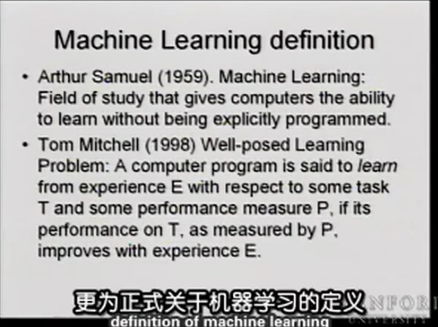</p>
<h1><s>监督学习应用梯度下降</s></h1>
<p>这一部分内容可见张贤达老师的《矩阵分析与应用》更加详细，或者看我整理的博客内容，<a target="_blank" rel="noopener" href="https://vincere.fun/posts/55264e6f/">矩阵微分与正规方程组推导</a></p>
<h2 id="矩阵求导-matrix-derivatives">矩阵求导 (matrix derivatives)</h2>
<p>线性回归的方程式求解，吴老师有一个自己的符号，可以简化推导。</p>
<p>首先，我们将梯度下降写成向量形式，已知梯度可以写成一个向量</p>
<p style=""></p><p>因此，每次梯度下降参数变化如下，这里的 θ 也是一个 n+1 维的向量。</p>
<p style=""></p><p>假设你有一个函数，输入是一个 m×n 的矩阵，输出是一个实数。</p>
<p style=""></p><p>这里定义<strong>函数 f 关于它的输入矩阵的梯度</strong>，这里也定义为一个矩阵。</p>
<p style=""></p><p>举个例子，假设 A 为一个 2×2 的方阵。存在一个函数 f(A) 如下：</p>
<p style=""></p><p style=""></p><p>因此，这里我们既可以函数 f 的梯度，如下：</p>
<p style=""></p><h2 id="迹的定义与性质">迹的定义与性质</h2>
<p>另一个定义，如果 A 是一个n×n的方阵。 矩阵 A 的<strong>迹</strong>就是对角线元素之后。</p>
<p style=""></p><p>存在下列定理</p>
<p style=""></p><p>因此，引申出</p>
<p style=""></p><h2 id="trAB-trBA-证明">trAB = trBA 证明</h2>
<p>假设 A 为 m × n 的矩阵，B 为 n × m 的矩阵，运用矩阵乘法，存在下式</p>
<p style=""></p><p style=""></p><p>观察一下，得知二者相等，得证 trAB = trBA 。</p>
<h2 id="矩阵求导的性质">矩阵求导的性质</h2>
<p style=""></p><h3 id="证明第一条性质">证明第一条性质</h3>
<p>假设 A 为 m × n 的矩阵，B 为 n × m 的矩阵,  tr(AB) 为</p>
<p style=""></p><p>已知当你对 A<sub>ij</sub> 求导时，其导数为 B<sub>ji</sub> ，因此该式的导数便是 B 的转置矩阵。</p>
<h3 id="证明第二条性质">证明第二条性质</h3>
<p>一开始我理解错了这条公式的含义，我理解成了</p>
<p style=""></p><p>完全不知道怎么证明，最后是代入上面哪个例子，证伪了。</p>
<p style=""></p><p>这个解显然不是上面的梯度矩阵的转置矩阵，因此该式不成立。</p>
<p>这条性质应该是左边，左边式子中还是 f(A) ，因此这个式子含义还是说对输入为 A 矩阵的f 函数求梯度，而不是对 A<sup>T</sup> 。这个式子仅仅是说梯度矩阵里面的元素排列按照 A<sup>T</sup> 的顺序，也就是这条式子仅仅是左右两边写法不一样而已，目前我个人理解是这样。</p>
<p style=""></p><p>简单证明如下，左式中随便取一个元素，均存在</p>
<p style=""></p><p>因此，左右两式互为转置函数。（这个矩阵就是 Jacobian 矩阵，和梯度矩阵互为转置）</p>
<h3 id="证明第三条性质">证明第三条性质</h3>
<p style=""></p><p>不会证明，没有头绪。</p>
<h3 id="证明第四条性质">证明第四条性质</h3>
<p style=""></p><p>我看懂讲义下面的描述了，这个设计到线性代数的一些知识。</p>
<p>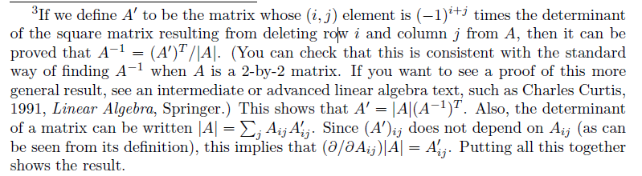</p>
<h2 id="线性回归求解">线性回归求解</h2>
<p>有了矩阵求导的帮助后，我们可以查看使得 J(θ) 最小的参数。</p>
<p>首先我们要将 J(θ) 写成矩阵形式</p>
<p>我们定义设计矩阵 X 是一个 m × n+1 维度的矩阵，表示训练集的输入值：（m 为样本数，n + 1 为参数数目）</p>
<p style=""></p><p>训练集的反应变量为</p>
<p style=""></p><p>因此，估计值与真值之差为</p>
<p style=""></p><p>因此，损失函数可以写成：</p>
<p style=""></p><p>联用第二条性质和第三条性质，因此下式成立：</p>
<p style=""></p><p>因此，下式成立。前三步不用讲，第四步可以转为<strong>迹</strong>的理由是，因此 J(θ) 是一个实数，一个实数的迹等于它本身；第五步利用 trA = trA<sup>T</sup> 这一性质。第六步应用上面的性质，其中 A<sup>T</sup> = θ， B = B<sup>T</sup> = X<sup>T</sup>X ， C = I 。</p>
<p style=""></p><p>为了求 J(θ) 的最小值，<strong>我们将其导数设为0</strong>。因此我们获得了<strong>正规方程组(normal equations)</strong>。</p>
<p style=""></p><p>因此，</p>
<p style=""></p><p>吴老师这个证明思路是很巧妙，但是我感觉有点像是为了证明而证明。我看张沅老师的教材《畜禽育种中的线性模型》中就是直接矩阵求导，一点也不麻烦，吴老师这种看着更绕。</p>
<h2 id="最小二乘的概率学解释">最小二乘的概率学解释</h2>
<p>首先，我们假定目标变量和输入变量的关系如下</p>
<p style=""></p><p>这里添加了一个误差项，误差项的来源包括<strong>未添加到模型中的因素</strong>和<strong>随机噪音 (random noise)</strong>。我们进一步假设误差间服从<strong>独立同分布</strong>的<strong>正态分布</strong>，其<strong>均值为0</strong>。即可以写作</p>
<p style=""></p><p>其概率密度函数为</p>
<p style=""></p><p>也就是</p>
<p style=""></p><p>下式表明给定 x<sup>(i)</sup> 和 θ 值时 y<sup>(i)</sup> 的 分布，注意这里不是条件分布。</p>
<p style=""></p><p>为什么可以这么写呢？因为残差服从正态分布，就是说明反应变量也是服从正态分布，其分布如下</p>
<p style=""></p><p>下面这段话没太看懂。哦哦，这里就是说上面那个函数看上去像是对 y<sup>(i)</sup> 的函数，我们想得到一个关于参数 θ 的函数，我们就将上面这个函数换一个高大上一点的名字，<strong>似然函数</strong>，视为关于参数 θ 的函数，函数值也给一个新的名称，<strong>似然值</strong>，而不是概率。</p>
<p><strong>参数的似然值，数据的概率</strong>。这样说就很明确了。注意要这么说，我们要挑一组参数，使得<strong>这组参数的似然值最大，或者说这些数据出现的概率/可能性最大</strong>。</p>
<p>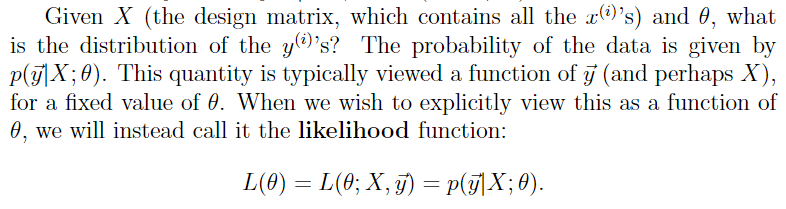</p>
<p>基于残差的<strong>独立性</strong>假设（因此，x 和 y 也是彼此独立的 ），我们可以写成：</p>
<p style=""></p><p>我们需要找到使得 L(θ) 最大的一组参数。我们可以先用 log 函数简化运算：</p>
<p style=""></p><p>因此，最大似然估计结果同样是使得最小二乘误差最小：</p>
<p style=""></p><p>下面这段话没太看懂。大概意思是说虽然当满足一些假设下，最小二乘的解与最大似然相同，但是二者还是不一样的，最小二乘并不需要满足最大似然的那些假设，或者说还有别的方式可以证实最小二乘算法的有效性。</p>
<p>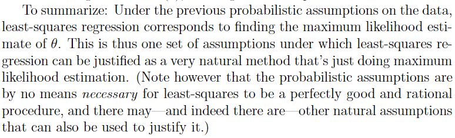</p>
<h1>欠拟合和过拟合</h1>
<h2 id="Locally-weighted-linear-regression">Locally weighted linear regression</h2>
<p>假设有这样的数据，如果我们用正常的线性回归是<strong>欠拟合</strong>的。</p>
<p>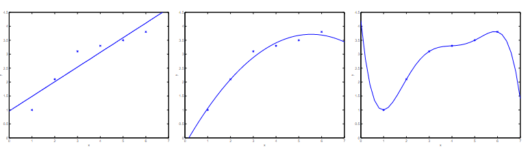</p>
<p>假如你有足够的训练集数据，你可以构建局部加权回归（LWR）, 其代价函数改为</p>
<p style=""></p><p>其中 w<sup>(i)</sup> 为非负数的权重。如果某个样本的权重很大，那么就会尽可以缩减其误差方差；如果某个样本的样本的权重很小，那么我们就不会管这个样本的误差方差。（这样 w 参数的数目与样本数目相同，参数的数目也太多了吧）</p>
<p>权重的一个标准选择是</p>
<p style=""></p><p>如果 x 与 x<sup>(i)</sup> 很接近，那么 w<sup>(i)</sup> 就会接近于 1 ；如果  x 与 x<sup>(i)</sup> 距离很远，那么 w<sup>(i)</sup> 就会接近于 0。因此这样拟合的结果就是只注重与 x<sup>(i)</sup> 距离近的点，忽略那些距离很远的点的贡献。这里的参数 τ 为<strong>波长参数</strong>，它控制了权重随距离下降的幅度，这个参数越大，下降幅度越慢，有点类似与正态分布的标准差，都是钟形。</p>
<p>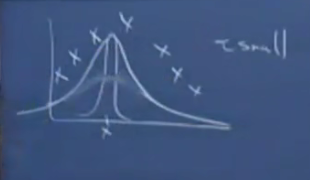</p>
<p>也就说，你每次预测某个 x<sup>(i)</sup> 时，你都需要用这个算法拟合一次参数，才能得到预测值。这一组参数就是特定的与  x<sup>(i)</sup> 绑定的一组参数。所以这是一种<strong>非参数方法</strong>。</p>
<h2 id="逻辑回归">逻辑回归</h2>
<p>略，对我没有新东西</p>
<h1>牛顿方法</h1>
<p><strong>牛顿方法是和梯度下降一样，求函数极值的方法</strong>。</p>
<p>假设存在一个函数 f(θ): R → R，你想找到一个θ值，使得 f(θ) = 0 。 我们可以用牛顿方法使用下式来不断更新 θ 值</p>
<p style=""></p><p>后面这部分就相当于目前位置与切线和X轴交点的距离。</p>
<p style=""></p><p>因此每一次就是迭代到切线与X轴的交点，画图如下</p>
<p>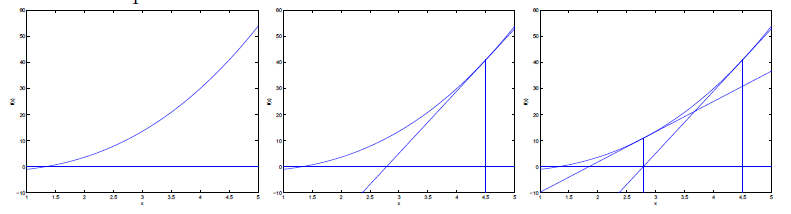</p>
<p>如果你要找某个函数的最大值或最小值，比如似然函数 L(θ) 。你需要计算<strong>一阶导数等于0</strong>的地方，因此你可以将上面的 f(θ) 替换为 L’(θ)</p>
<p style=""></p><p>上面的 θ 只是单个数字，我们将其推广为一般化的向量。</p>
<p style=""></p><p>这里 H 是一个 n+1 × n+1 （n 是特征的数目）的矩阵，称为 <strong>Hessian</strong> 矩阵，其元素为：</p>
<p style=""></p><p>牛顿方法收敛速度非常快，一般十几次迭代就收敛了。但是牛顿方法的每次迭代比梯度下降方法要慢得多，因为设计到 H 矩阵的求逆。但是如果特征数目不是特别大时，牛顿方法还是会快很多。当你将牛顿方法用于逻辑回归时，这时也称为 <strong>Fisher scoring</strong>。</p>
<h2 id="Generalized-Linear-Models">Generalized Linear Models</h2>
<p>线性回归 y 服从高斯分布，逻辑回归中 y 服从伯努利分布。我们可以证明这两种方法都是一个更广的模型家族的一个例子，这个模型家族称为<strong>一般线性模型 (Generalized Linear Models， GLMs)</strong>。</p>
<h3 id="The-exponential-family">The exponential family</h3>
<p>我们首先从定义<strong>指数族分布(exponential family distributions)</strong>。指数族分布均可以写成下式：（这里 η<sup>T</sup> 是转置矩阵的意思，下面的例子首先将 η 视为一个实数）</p>
<p style=""></p><p>其中，η 称为自然参数(natural parameter)；T(y) 称为充分统计量(sufficient statistic)，通常就是 y 。</p>
<p>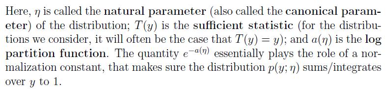</p>
<p>下面我们要证明高斯分布和伯努利分布均是指数族分布的一个特例，首先我没看伯努利分布，伯努利分布只有一个参数</p>
<p style=""></p><p>我们可以将伯努利分布写成下式</p>
<p style=""></p><p>我们就得到了</p>
<p style=""></p><p>针对这个式子，如果我们反过来求 Φ ，我们得到</p>
<p style=""></p><p>这个函数就是 sigmoid 函数。完善将伯努利分布转化为指数族分布的公式，得到</p>
<p style=""></p><p>让我们再看高斯分布如何转化为指数族分布的形式。在前面的例子中，极大似然估计参数中 σ<sup>2</sup> 没有发挥作用，处于简化推导的目的，这里设置 σ<sup>2</sup> = 1 ，把它忽视掉，见下式。如果考虑  σ<sup>2</sup> ，那么此时的 η 会是一个二维的向量。</p>
<p style=""></p><p>因此，高斯分布也是一个指数族分布，其中</p>
<p style=""></p><p>还有很多其他分布，比如多元正态分布，泊松分布，指数分布等也服从指数族分布</p>
<h2 id="Constructing-GLMs">Constructing GLMs</h2>
<p>对于一个预测 y 的回归或分类问题，为了构建 GLM 来解决这个问题，我们需要做出下面这三个假设。首先，我们需要指定当给定 x 和 θ 时，假设 y 服从某个指数族分布。第二，我们的预测值是 E[y|x]，即 y 的期望 。第三，我们假设自然参数 η 与输入特征之间为<strong>线性相关关系</strong>，即</p>
<p style=""></p><h3 id="线性回归">线性回归</h3>
<p>我们现在如果用推导GLM 的方式求解逻辑回归和线性回归。先看线性回归，在上面的推导过程中，我们得知高斯分布可以转换为指数族分布，参数 η = μ ，其实其GLM 预测值为（高斯分布的期望值就是 μ）：</p>
<p style=""></p><h3 id="逻辑回归-2">逻辑回归</h3>
<p>再看逻辑回归，其预测值为</p>
<p style=""></p><p>因此我们就得到了逻辑回顾的 sigmoid 函数，这是解释为什么使用 sigmoid 函数的一个理由。</p>
<p>最后，下面这个函数称为<strong>正则响应函数 (canonical response function)</strong>，其逆函数 g<sup>-1</sup> 称为<strong>正则关联函数 (canonical link function)</strong>。</p>
<p style=""></p><p>比如上面的逻辑回归的正则响应函数为</p>
<p style=""></p><h3 id="Softmax-Regression">Softmax Regression</h3>
<p>让我们看一个更复杂的GLM的例子，假设有一个分类问题，其中反应变量可以取 k 个值，</p>
<p style=""></p><p>我们现在可以假设反应变量服从一个<strong>多项式分布 (multinomial distribution)</strong>。我们统一可以使用 GLM 来拟合这类数据，首先我们要见多项式分布写成指数族分布的形式。</p>
<p>为了将多项式分布分布参数化，你可以会想用 k 个参数 Φ<sub>1</sub>, … , Φ<sub>k</sub> 来表示每个输出结果的概率。但是，<strong>这些参数之间存在冗余，或者说彼此不独立</strong>（假设知道了 k-1 个参数的数值，那么最后一个参数的数值也就知道了）。因此，我们只设定 k-1 个参数， Φ<sub>1</sub>, … , Φ<sub>k-1</sub> ，最后一个输出结果的概率通过计算得到。</p>
<p>我们定义 T(y) 如下（T(y) 为一个 k-1 维的向量）</p>
<p style=""></p><p>这里不像之前的例子，T(y) 并没有设置为 y 。这里我们定义 <code>1&#123;.&#125;</code>  为一个<strong>指示函数</strong>，如果方括号内的内容为真则该式为1，反之为0 。比如 <code>1&#123;2=3&#125; = 0</code> 。因此我们可以将 T(y) 和 y 之间的关系写成：</p>
<p style=""></p><p>另外，存在</p>
<p style=""></p><p>现在我们可以看看如何将多项式分布转化为指数族分布了。</p>
<p style=""></p><p>其中</p>
<p style=""></p><p>正则关联函数为</p>
<p style=""></p><p>为了方便，我们同样定义 η<sup>k</sup> 。</p>
<p style=""></p><p>为了求关联函数的逆函数，得到正则响应函数，我们得到如下式子：</p>
<p style=""></p><p>因此，</p>
<p style=""></p><p>将该式代入到上式中，得到：</p>
<p style=""></p><p>这个函数就是这里的正则响应函数，这里也称为 <strong>softmax</strong> 函数。</p>
<p>根据假设3，即 η 和 输入变量 x 是线性相关的，因此</p>
<p style=""></p><p style=""></p><p>为了书写方便，我们定义 θ<sub>k</sub> = 0 ，因此</p>
<p style=""></p><p>因此，该GLM的分布为</p>
<p style=""></p><p>这个用于 k 个分类水平问题的模型称为 <strong>softmax regression</strong> 。<strong>它是逻辑回归的一般化形式</strong>。</p>
<p>我们的假设会输出 k 个水平的预测概率</p>
<p style=""></p><p>最后，让我们讨论一下参数拟合的问题。类似于线性回归和逻辑回归，我们同样会使用<strong>最大似然法</strong>进行参数拟合。假设训练集中有 m 个样本，我们可以计算除其<strong>对数似然函数</strong>如下：</p>
<p style=""></p><p>之后你就可以用梯度下降法或牛顿法来求 L(θ) 求得最大值的一组参数。</p>
<h3 id="思考">思考</h3>
<p>根据GLM 的概念，那么只要指定 y 服从某种指数族分布，那么后续的推导就是自动进行的，你就会自动得到一个学习算法和预测函数。比如，你指定 y 服从<strong>正态分布</strong>，套用 GLM 的公式和推导，你就得到了<strong>线性回归</strong>；你指定 y 服从<strong>伯努利分布</strong>，套用 GLM 的公式和推导，你就得到了<strong>逻辑回归</strong>。</p>
<p><code>Softmax Regression</code> 让我想到了神经网络，像是没有隐藏层的多分类的神经网络。</p>
<h1>生成学习算法</h1>
<p>逻辑回归是直接预测 p(y|x），感受器方法是想将输入特征 X 的空间直接标记为标签 {0,1} ，这类方法都称为<strong>判别方法 (discriminative learning algorithms)</strong> 。</p>
<p>这里我们要讨论的算法尝试模拟 p(x|y) 和 p(y) ，这类算法称为<strong>生成方法 (generative learning algorithms)</strong> 。计算出  p(x|y) 和 p(y)  后，就可以通过贝叶斯法则计算后验概率：</p>
<p style=""></p><p>分母部分可以用全概率公式进行展开。但是，当我们要做决策时，我们实际上只需要看分子部分，因为</p>
<p style=""></p><h2 id="Gaussian-discriminant-analysis">Gaussian discriminant analysis</h2>
<p>GDA 是第一个要介绍的生成算法，在这个模型中，我们假设 <strong>p(x | y) 服从多元正态分布</strong>。我们先简要介绍一下多元正态分布的一些性质：</p>
<h3 id="多元正态分布">多元正态分布</h3>
<p>n维的多元正态分布存在两个参数，一个是 均值向量 μ ∈ R<sup>n</sup> ，一个是方差矩阵 Σ ∈ R<sup>n×n</sup> ，方差矩阵是对称矩阵并且是半正定矩阵。其概率密度函数写作：</p>
<p style=""></p><p>在该式中，<code>|Σ|</code> 表示行列式。</p>
<p>下面三个图分别是服从 N(<strong>0</strong>，<strong>I</strong>) ，  N(<strong>0</strong>，<strong>0.6I</strong>) ， N(<strong>0</strong>，<strong>2I</strong>) ，我们可以看到随着方差变大，分布越矮胖。</p>
<p>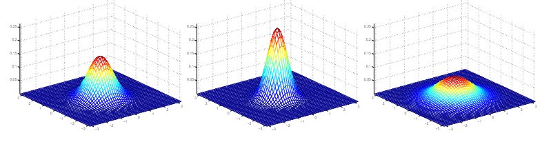</p>
<p>下面是三个图的均值均为 0 向量，方差组分分别如下：</p>
<p style=""></p><p>画图为：</p>
<p>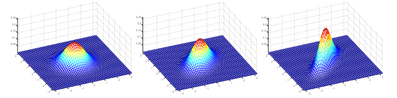</p>
<p>我们可以看到随着非对角线元素的增加，密度函数的图像变得越来越像 45度方向（x1=x2）挤压。我们看等高图，可以看到更加明显地变化。</p>
<p>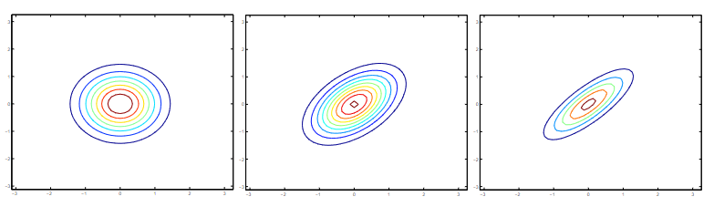</p>
<h3 id="GDA-model">GDA model</h3>
<p>当我们面临一个分类问题，其特征都是<strong>连续变量</strong>，我们可以使用<strong>Gaussian Discriminant Analysis (GDA)</strong> 模型。这里的 GDA 模型就是 ISL 书里的 <strong>Linear Discriminant Analysis (LDA)</strong> 模型。</p>
<p>我们<strong>假设 p(x|y) 服从方差相同的多元正态分布</strong>，模型如下：</p>
<p style=""></p><p>因此，我们可以写下分布如下：</p>
<p style=""></p><p>对数似然函数为</p>
<p style=""></p><p>这里的似然函数称为 <strong>Joint likelihood</strong>，因为里面的项是 p(x, y)。逻辑回归的似然函数称为<strong>conditional likelihood</strong>，因为里面的项是 p(y | x) 。</p>
<p>通过最大化似然函数（求偏导为0，缺证明，不会证明），我们发现这些参数的最大似然估计值为：</p>
<p style=""></p><p>下图为可视化结果，图中的两个等高图就是对两个水平拟合的高斯分布，我们注意到由于方差相同，这两个等高图的形状一模一样。图中直线为决策线，在该条线上 p(y=1|x) = 0.5 。</p>
<p>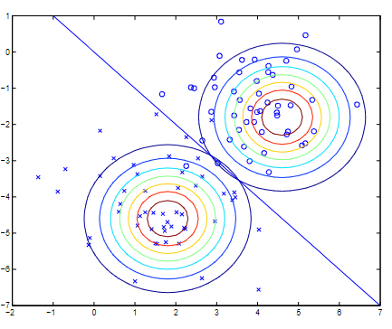</p>
<h3 id="Discussion-GDA-and-logistic-regression">Discussion: GDA and logistic regression</h3>
<p>逻辑回归算法是要找一条直线，将两类数据尽可能分开。GDA 和 逻辑回归存在一定关系，如果逆看一下GDA 算法的  ，你会发现它同样可以表达为下面这种形式（缺证明）</p>
<p style=""></p><p>这里 θ 是关于 $ \phi, \mu_{0}, \mu_{1}, \Sigma$ 的一个函数。这个形式就正好是逻辑回归的形式。但是这里 θ 不一样，因此逻辑回归和GDA找到的决策线并不相同。那么，我们什么时候用逻辑回归，什么时候用 GDA 呢？</p>
<p>我们说如果 p(x|y) 如果满足多元高斯分布的假设，那么 p(y|x) 就服从 sigmoid 函数。但是反过来这句话不成立，也就是说 p(y | x) 如果服从 sigmoid 函数，p(x|y) 不一定满足多元高斯分布。这说明 GDA 算法对数据的假设更&quot;强&quot;，或者说更严格 (<strong>stronger modeling assumptions</strong>) 。事实证明，如果模型假设是对的（p(x|y) 服从方差相同的多元正态分布），那么 GDA 拟合效果更好。相反，逻辑回归由于没有对 p(x|y) 分布做严格假设，因此更加稳健（i<strong>事实上， p(x|y) 只要服从某种指数族分布，那么 p(y=1 | x) 就服从 sigmoid 函数</strong>。但是这句话反过来不成立。）。由于逻辑回归假设弱得多，因此逻辑回归拟合相比于GDA需要更多的数据。</p>
<p>因此，从实践角度上说，逻辑回归比GDA用得更多。</p>
<h2 id="Naive-Bayes">Naive Bayes</h2>
<p>在 GDA 算法中 ，x 都是连续变量组成的向量。让我们假设另外一种情况，假设 x 都是<strong>离散变量</strong>。</p>
<p>假设我们需要建立一个垃圾邮件监测系统，首先我们需要从邮件内容中构建特征。假设我们将每个可能出现的单词作为一个特征，如果邮件内容中包含这个单词，则 x<sub>i</sub> = 1，反之则为 0 。举例如下：</p>
<p>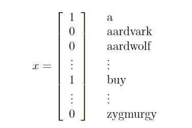</p>
<p>之后我们需要构建我们的生成算法，因此我们需要对 p(x|y) 进行建模。但是，假如我们总共有 50000 个单词，那么如果我们用多项式分布对总共 2<sup>50000</sup> 种可能的结果进行建模，那么我们就会有 (2<sup>50000</sup> -1) 维度的参数向量，那么参数就太多了。</p>
<p>因此，为了对 p(x|y) 建模，我们需要做一个更强的假设。我们假设当给定 y 值后，x 之间是<strong>条件独立</strong>的。这个假设也称为<strong>朴素贝叶斯假设 (Naive Bayes assumption)</strong> ，相应的算法称为 <strong>Naive Bayes classifier</strong> 。举个例子，假设 y =1 表示垃圾邮件，“buy” 是第2087个单词，“price” 是第39831个单词，那么当我告诉你 y =1 时 (这个邮件是垃圾邮件)，你对 x<sub>2087</sub> 的认识，不会影响你对 x<sub>39831</sub> 的认识。正式的写法如下式。</p>
<p style=""></p><p>注意，这并不是说 x<sub>2087</sub> 和 x<sub>39831</sub> 彼此独立，如果是二者彼此独立的话，应该写作下式：</p>
<p style=""></p><p>这里，我们只是说当给定y时， x<sub>2087</sub> 和 x<sub>39831</sub> 是<strong>条件独立的 (conditionally independent)</strong> 。</p>
<p>因此，此时我们有下式，第一个等号是通用的概率论上的公式，第二个等号来自于朴素贝叶斯假设。此时我们知道NB假设是一个非常强的假设，这个假设明显是错的，如果你看到了 cs229 这个单词，那么你就很有可能看到吴老师或助教的名字，但是朴素贝叶斯方法仍然是一个很有效的方法。</p>
<p style=""></p><p>因此NB算法的参数包括</p>
<p style=""></p><p style=""></p><p style=""></p><p><strong>joint likelihood</strong> 似然函数为（m 为样本数目）：</p>
<p style=""></p><p>求似然函数最大值，得到最大似然估计值如下：</p>
<p style=""></p><p>在上式中，符号 ^ 表示 “and” 。上面的参数有着非常自然的解释，比如  就是垃圾邮件中单词 j 出现的比例。</p>
<p>拟合参数之后，为了对一个新的样本进行预测，我们可以直接计算</p>
<p style=""></p><p>最后我们挑后验概率最高的那个水平。</p>
<p>朴素贝叶斯算法主要用于特征为<strong>离散变量</strong>的情况，这里我们仅讨论了特征均为二分类变量的情况，我们可以直接推广到特征为多分类变量的情况。 这里我们直接将 p(x<sub>i</sub>|y) 为一个多项式分布，而不是一个伯努利分布。我们也可以通过分组，将一些连续变量转变为多分类的离散变量。</p>
<h3 id="Laplace-smoothing">Laplace smoothing</h3>
<p>我们可以对朴素贝叶斯算法做一个简单的改变，可以让其效果更好，尤其是对于文本识别任务。我们先讨论一个目前朴素贝叶斯算法的问题，再说如何修正它。</p>
<p>假设新邮件中有一个缩写单词 “nips” ，这个单词没有在训练集中出现过。假设你之前选特征的时候是直接使用了整本字典的单词，“nips” 是字典中第 35000 个单词，那么该单词参数的最大似然估计值为：</p>
<p style=""></p><p>因此，当你尝试决定一封包含 “nips” 单词的新邮件是否为垃圾邮件，计算后验概率如下：</p>
<p style=""></p><p>现在就出现了问题，分子分母都是 0 。</p>
<p>在统计上，仅仅因为在训练集中没有出现，就将一个某个事件出现概率估计为 0 是一个不好的做法。举个例子，假设你的学校篮球队过去五年的篮球比赛没有赢过一场，那么你如果根据过去表现预测今年比赛的胜率是0，这似乎有些苛刻，你可以给一个很小的胜率，比如 1/7 。再举个例子，假设你过去一个月都看到了太阳升起，你也没法说明天太阳就一定会升起。</p>
<p>正式地说，假设变量 z 服从多项式分布，可能的值为 {1, … ,k} 。训练集中共有 m 个样本，参数的最大似然估计值为</p>
<p style=""></p><p>就像前面看到的，有一些参数的最大似然估计值就有可能是 0 。为了避免这一点，我们可以使用 <strong>拉普拉斯平滑 (Laplace smoothing)</strong> ，采用下面的估计值（k 为分类水平数）。</p>
<p style=""></p><p>这里我们对分子部分增加了 1，分母部分增加了 k，所有参数估计值相加仍然为 1，但是所有参数估计值均不可能为 0 。在某些特定的条件下，采用拉普拉斯平滑的参数估计值可能更好。</p>
<p>回到我们的朴素贝叶斯分类器，如果采用 Laplace smoothing ，我们可以画的下面的参数估计值：</p>
<p style=""></p><p>拉普拉斯平滑一般不需要对  进行处理，因为正常来说垃圾邮件和非垃圾邮件均占有一定比例，二者均不能是 0 。</p>
<h1>朴素贝叶斯算法</h1>
<h2 id="Event-models-for-text-classification">Event models for text classification</h2>
<p>这种算法是朴素贝叶斯方法对文本识别的效果更好的一种变体，称为<strong>多项式事件模型 (Multinomial Event Model)</strong>。朴素贝叶斯模型也可以称为<strong>多元伯努利事件模型 （Multivariate Bernoulli event model ）</strong>。</p>
<p>在这种模型下，我们构建的特征向量（feature vector，翻译过来差点看不懂）如下，假设训练集一封邮件的单词长度为 n ，其特征向量为  ，其中 x<sub>i</sub> 的值表示其在字典中的位置（字典就是你构建模型使用的全部单词），因此其可能的取值为  ，其中 |V| 为 字典的长度。</p>
<p>此时每一个特征就是服从多项式分布，而不是伯努利分布了。这里我们假设<strong>单词的位置没有影响</strong>，不同位置的单词服从一个相同的多项式分布，不同位置的特征之间服从条件独立（也就是说你把一封邮件的所有单词打乱重排，结果仍一样）。因此一封邮件发生的概率为  ，这里 n 为邮件单词数目。</p>
<p>这里我们需要的参数是</p>
<p style=""></p><p style=""></p><p style=""></p><p>假设我们有一个样本数为 m 的训练集  ，其中  。因此，似然函数为</p>
<p style=""></p><p>求该式最大值，我们得到参数的最大似然估计值为：</p>
<p style=""></p><p>我们采用拉普拉斯平滑效果更好，因此前两个参数估计值改为：</p>
<p style=""></p><h2 id="支持向量机">支持向量机</h2>
<p>前面讲到的分类方法，包括逻辑回归和朴素贝叶斯，都属于线性方法，那么我们要如何得到一个非线性分类器呢？神经网络和支持向量机就是两种得到非线性分类器的方法。</p>
<p>首先我们先要再讲一些线性分类器的知识。</p>
<h3 id="Margins-Intuition">Margins: Intuition</h3>
<p>先考虑逻辑回归，如果  ，那么我们就会判定 y = 1。因此如果  越大，预测 y = 1 的概率就越大，我们就越有”信心“相信 y = 1。反之，如果，那么我们很有信心相信 y = 0 。因此对于一个训练集，我们希望找到一组参数 θ，使得当 y = 1时，  ，当 y = 0 时，  。因此，这可以作为一个我们的目标。</p>
<p>我们举个例子，假设存在数据如下图，点 A 距离决策线很远，因此我们似乎很有理由相信在这一点 y = 1 。点 C 距离决策线很近，只要决策线稍作改变，点 C 就可以从判定 y =1 改为判定为 y = 0 。因此我们想要找的决策线，既要满足错误率最低，还要满足判定信心最高（所有点尽可能远离决策线）</p>
<p>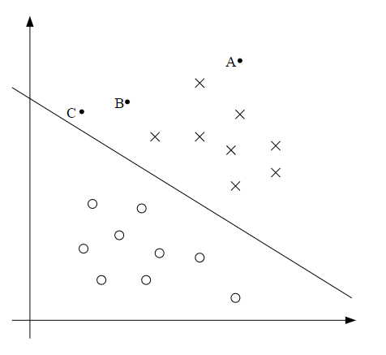</p>
<h3 id="Notation">Notation</h3>
<p>为了更好地讨论 SVM 算法，我们需要先引入一些符号。我们假设一个二分类问题，y ∈ {-1，1} ，而不是之前的 {0，1} 。同样地，我们不再线性分类方法的参数 θ，而是使用参数 w, b ，将分类器写为：</p>
<p style=""></p><p style=""></p><p>如果  ，则判定 g(z) =1 ，反之则判定 g(z) = -1 。这里将截距 b 拆分出来，这样我们后面可以单独对截距进行处理。这里同样放弃了前面设定 x<sub>0</sub> =1 的做法。因此，b 就是前面的 θ<sub>0</sub> ，而 w 就是 </p>
<p>注意，这里我们根据  的大小直接预测 1 或者 -1 , 就像感受器算法，而不像是逻辑回归，还需要先预测 y = 1的概率，再进行判定。</p>
<h3 id="Functional-and-geometric-margins">Functional and geometric margins</h3>
<p>假设存在一个训练集样本  , 我们定义 <strong>函数间隔 (functional margin)</strong> of (w,b) 为</p>
<p style=""></p><p>假设  ，那么为了让函数间隔越大，那么我们就需要让  是一个很大的正数；反之则需要让  为一个很大的负数。其实，如果  成立，那么我们对这个样本的预测就是对的。因此，函数间隔越大，我们对预测的信心越大。</p>
<p>但是函数间隔有一个不好的性质，假设我们将参数w,b直接翻倍为 2w,2b，那么模型的预测结果不会改变（因为模型预测结果只看符号），但是函数间隔扩大了一倍（没有意义）。因此，我们可能需要往函数间隔的公式加入一些参数标准化的条件，比如 $||w||_{2} =1 $ 。</p>
<p>假设我们有一个训练集  ，我们定义训练集S某组参数 (w,b) 的函数间隔为最小的单个样本的函数间隔，写作下式：</p>
<p style=""></p><p>下面，我们来看一下<strong>几何间隔 (geometric margins)</strong>。决策线如下图所示，图上同样显示了 w 向量。我们知道 w 向量<strong>正交于</strong>分隔超平面。假设我们在 A 点，此处的预测值为1，该点与决策线的距离为线段 AB 。</p>
<p>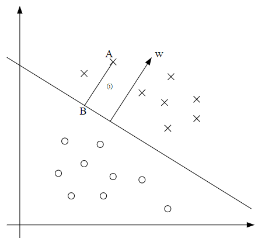</p>
<p>那么我们如何确定几何间隔的值呢？也就是 AB 长度如何计算？首先， 表示单位长度的 w 向量。因为 点A 表示 x<sup>(i)</sup> ，因此我们发现点B 可以写为  。又因为点 B 在决策线上，而决策线上的点均满足 ，因此</p>
<p style=""></p><p>因此，我们得到下式（因为 ）</p>
<p style=""></p><p>这个式子只对于在决策线上方（预测y=1）有用，为了使得几何间隔对所有样本点均实用，我们实际定义几何间隔如下：</p>
<p style=""></p><p>从该式可知，如果 ，那么函数间隔与几何间隔相同。放大或缩小参数对几何间隔没有影响，比如我们将 w 和 b 均扩大两倍，几何间隔不变。</p>
<p>最后，对于一个训练集 S ，我们同样定义对于训练集 S 的一组参数 (w, b) 的几何间隔等于单个样本点的几何间隔的最小值</p>
<p style=""></p><h3 id="为什么-w-是-w-Tx-b-0-平面的法向量？">为什么  是  平面的法向量？</h3>
<p>这个问题的解答其实就是来自于对平面的定义和描述。资源来源于一个微积分课程 - <a target="_blank" rel="noopener" href="https://tutorial.math.lamar.edu/Classes/CalcII/CalcII.aspx">Calcll</a>  的第六章 <code>3-Dimensional Space</code>。</p>
<p>假设在一个三维平面上，假设我们已知平面上的一个点  及其正交向量/法向量  。我们假设  是平面上的任何一点，我们分别用   和   表示  和  的位置向量，如下图所示：</p>
<p>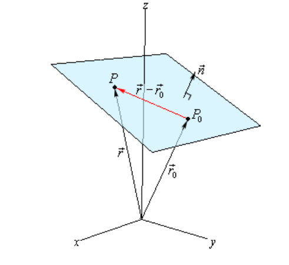</p>
<p>我们注意到向量  正好处于这个平面上，我们又已知平面的正交向量  ，因此   同样正交于   ，存在下式</p>
<p style=""></p><p>这称为<strong>平面的向量方程 (vector equation of the plane)</strong>，将上面的式子拆开，我们得到下式（<strong>平面的标量表达式 (scalar equation of plane)</strong>）</p>
<p style=""></p><p>通常我们会将该式写为</p>
<p style=""></p><p>这个式子就是通常我们给出的平面表达式，因此当我们看到这个平面的表达式，我们马上就知道这个平面的法向量为</p>
<p style=""></p><h1>最优间隔分类器问题</h1>
<h3 id="The-optimal-margin-classfier">The optimal margin classfier</h3>
<p>我们想要找一个 margin 最大的决策线（假设训练集是线性可分的），然后我们如果找到一个几何间隔最大的决策线呢？我们得到下面的优化问题：</p>
<p style=""></p><p>但是  这个限制条件是一个 <code>nasty(non-convex)</code> 的限制条件（不懂），这个问题无法用标准的优化软件来解决。因此，我们将这个优化问题改为：</p>
<p style=""></p><p>但是  这个目标函数也是 <code>nasty (non-convex)</code> 的，因此我们依然无法解决这个问题。因此，我们还需要继续做转换，考虑到参数  和  可以随意缩放使得函数间隔取得任意值，因此我们使得参数缩放至函数间隔正好为1：</p>
<p style=""></p><p>此时相当于上面的优化问题乘以了某个常数，代入上式，得到优化目标为  ，等同于最小化  ，因此我们有了下面的优化问题:</p>
<p style=""></p><p>这个优化问题是可以被有效解决的，其目标函数是一个凸函数，限制条件为线性限制。这个优化问题的解便是 <strong>最大间隔分类器 (optimal margin classifier)</strong> 。这个优化问题可以用<strong>商业二次规划代码 (commercial quadratic programming code)</strong> 解决。</p>
<p>这里我们可能要打断一下来讨论一下<strong>拉格朗日对偶 (Lagrange duality)</strong> 。这可以将我们的优化问题转为对偶形式，从而使得我们使用不同的核函数来高效地得到最大间隔分类器，这往往比一般地二次规划软件更好。</p>
<h3 id="Lagrange-duality">Lagrange duality</h3>
<p>让我们先把 SVM 和 最大间隔分类器啥的放在一边，讨论一下如何解决有约束条件的优化问题。</p>
<p>假设一个优化问题的形式如下：</p>
<p style=""></p><p>你可能回忆起如果使用**拉格朗日乘子 (Lagrange multipliers)**来解决这个问题（没有！）。在这种方式中，我们定义拉格朗日函数如下</p>
<p style=""></p><p>这里的  称为拉格朗日乘子。我们需要使得偏导数均为0</p>
<p style=""></p><p>从而求解  和  。</p>
<p>在这一章节，我们需要将其扩展，同时包含等式约束条件和不等式约束条件，原始优化问题如下：</p>
<p style=""></p><p>为了解决这个问题，我们开始定义<strong>广义拉格朗日函数 (generalized Lagrangian)</strong> 如下：</p>
<p style=""></p><p>这里的  和  均为拉格朗日乘子，考虑下面的函数</p>
<p style=""></p><p>这里的 “P” 表示 “primal” ，原始的意思。假设我们有某个  ，如果  违背了任何一个原始限制条件（ or  ），那么你可以验证下式成立（如果某个  ，那么下式会将相应的  变成正无穷；如果  , 根据其符号下式就会将相应的  调整为正无穷或负无穷 ）</p>
<p style=""></p><p>反过来说，如果   符合所有的限制条件，那么   (此时后面两项均会设为0) ，因此</p>
<p style=""></p><p>因此，我们考虑下面的最小化问题</p>
<p style=""></p><p>我们看到这个优化问题和我们原始的优化问题一样。因此，我们定义这个优化目标的最理想的值为  ，我们称之为 <code>the value of the primal problem</code> 。</p>
<p>此时，我们看一个不一样的问题，我们定义</p>
<p style=""></p><p>这里，”D&quot; 表示 “dual&quot; 。我们现在提出<strong>对偶优化问题 (dual optimization problem)</strong>：（对偶问题和原始问题仅仅是将 max 和 min 的顺序进行了调换）</p>
<p style=""></p><p>我们同样定义这个对偶优化目标的最优值为 </p>
<p>那我们如何将原始优化问题和对偶优化问题联系起来呢？存在下式（缺证明）：</p>
<p style=""></p><blockquote>
<p>(You should convince yourself of this; this follows from the “max min” of a function always being less than or equal to the “min max.”)</p>
</blockquote>
<p>然而，在某些条件下，我们有下式（ 是原始问题的值，也就是  的最小值，此时  也是最小值，因此此时求解对偶问题就是求解原问题）</p>
<p style=""></p><p>因此此时我们可以通过解决对偶问题，来解决原始优化问题（因为对偶问题往往更加简单，具有更多有用的性质）。让我们看看这些条件是什么。</p>
<p>假设  和  都是凸函数（如果  存在 Hessian 矩阵，当且仅当其 Hessian 矩阵为半正定矩阵时 为凸函数 ）， 为<strong>仿射函数 (affine)</strong>（假如存在特定的  , ,  使得  。仿射类似于线性函数（如果没有截距，线性函数要求 ）,只是这里允许添加一个额外的截距项  ）。另外，假设限制条件  是可以实现的，即存在某个  使得所有的 $g_{i}(w) &lt; 0 $</p>
<p>在这些假设成立下，我们一定可以找到一个  ，使得  是原始优化问题的解，$ \alpha^{<em>}, \beta^{</em>}$ 是对偶问题的解，而且存在  。更进一步，这三个参数会服从 <strong>Karush-Kuhn-Tucker (KKT) conditions</strong> ，如下</p>
<p style=""></p><p>更进一步，如果某个   满足这些 KKT 条件，那么这就是原始优化问题和对偶问题的解。</p>
<p>KKT 条件中第三个条件称为 <strong>KKT dual complementarity conditi on</strong> 。这个条件隐含如果  ，那么  ，此时我们称  是一个 <code>active constraint</code> 。</p>
<p style=""></p><h3 id="如何理解拉格朗日乘子法">如何理解拉格朗日乘子法</h3>
<p>这个回答很好，直接复制过来的。</p>
<blockquote>
<p>作者：戏言玩家<br>
链接：<a target="_blank" rel="noopener" href="https://www.zhihu.com/question/38586401/answer/105588901">https://www.zhihu.com/question/38586401/answer/105588901</a><br>
来源：知乎<br>
著作权归作者所有。商业转载请联系作者获得授权，非商业转载请注明出处。</p>
</blockquote>
<p>这个可以比较直观的解释。</p>
<p>想象一下，目标函数是一座山的高度，约束 是镶嵌在山上的一条曲线如下图。</p>
<p>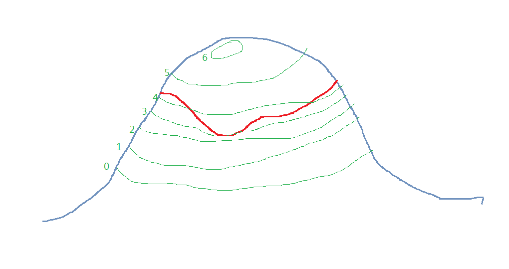</p>
<p>你为了找到曲线上的最低点，就从最低的等高线（0那条）开始网上数。数到第三条，等高线终于和曲线有交点了（如上图所示）。因为比这条等高线低的地方都不在约束范围内，所以这肯定是这条约束曲线的最低点了。</p>
<p>而且约束曲线在这里不可能和等高线相交，一定是相切。因为如果是相交的话，如下图所示，那么曲线一定会有一部分在B区域，但是B区域比等高线低，这是不可能的。</p>
<p>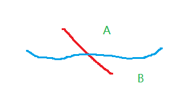</p>
<p>两条曲线相切，意味着他们在这点的法线平行，也就是法向量只差一个任意的常数乘子（取为）：, 我们把这个式子的右边移到左边，并把常数移进微分算子，就得到  。</p>
<p>把这个式子重新解释一下，这个就是函数  无约束情况下极值点的必要条件。</p>
<h3 id="Optimal-margin-classifiers">Optimal margin classifiers</h3>
<p>让我们回到找最大间隔分类器的优化问题：</p>
<p style=""></p><p>我们可以将这个限制条件写为</p>
<p style=""></p><p>我们对每个训练集的样本均存在这样一个限制条件。通过 KKT 互补条件，我们知道只有当训练集样本的函数间隔正好为1时（），才有  （通常如此，但不一定，此时  也可以等于 0）。 根据下面的图片，最大间隔的超平面就是下面的实线。</p>
<p>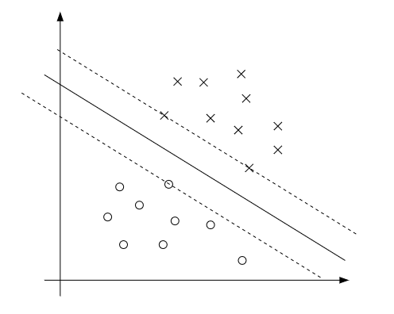</p>
<p>间隔最小的样本就是距离决策线最近的点，在这里是三个点，它们在平行于决策线的虚线上。因此只有三个  不等于0。这三个点称为<strong>支持向量 (support vectors)</strong>。</p>
<p>我们构建拉格朗日函数如下：</p>
<p style=""></p><p>我们注意到这里只有  ，没有 ，因为这里只有不等式约束条件。</p>
<p>让我们看一下这个问题的对偶形式。首先我们要先<strong>固定 </strong> ，针对  和  最小化  ，来得到  。即，我们求  对  和  的偏导为0。我们有：</p>
<p style=""></p><p><strong>证明</strong>：</p>
<p>首先看第一部分的梯度， ，因此易知   ，故   。</p>
<p>再看  的第一部分，我们剔除与  无关的项，得到  ，其中  和  为固定的常数，因此只要看  ,由于这是个向量内积，易知， ，整理一下，得证上式。</p>
<p>回到上面，因此存在下式，即  是训练集所有输入特征的线性组合。</p>
<p style=""></p><p>当我们对 b 求偏导，我们得到</p>
<p style=""></p><p>我们将得到的  的式子代入到拉格朗日函数，简化得到</p>
<p style=""></p><p><strong>证明</strong>：</p>
<p style=""></p><p>根据 b 的偏导，我们知道最后一项为 0，因此，我们得到</p>
<p style=""></p><p>这个式子就是对  和  最小化  的式子，整理一下（加入限制条件），得到对偶优化问题：</p>
<p style=""></p><p>你可以检查这个式子满足了 KKT 的所有条件（嗯？貌似KKT 还有一个条件没满足，就是 ）。在上面的优化式子，你可以得到  ，将  的值代入  的式子就能得到  。最后，当你已知  和  ，你可以很轻易地得到 b (不同的 b 为不同的平行的超平面)， 吴老师说是将  和  代入原始优化问题中 ，最终 b 的计算公式如下（缺证明）</p>
<p style=""></p><p>假设我们已经拟合了所有参数，预测新样本时只需要计算  ，看这个值的符号。我们可以将  的计算式子代入，得到</p>
<p style=""></p><p>因此，如果我们得到了  ，预测时我们只需要  和训练集所有样本点的<strong>内积</strong>。更进一步，在前面我们看到除了 <strong>support vectors</strong> ，其他的  均等于0 ，因此我们只需要计算  和支持向量之间的内积，这个计算量很小。</p>
<h1>顺序最小优化算法</h1>
<h2 id="Kernels">Kernels</h2>
<p>考虑线性回归的问题，假设我们用房屋面积  预测房价，我们使用特征  来拟合模型。我们称”原来“的输入值  称为 <strong>attributes</strong> ，我们同样使用  表示 <strong>feature mapping</strong> ，表示从 attributes 到 features 的映射关系，比如在这个例子中，我们有</p>
<p style=""></p><p>因此我们可以不对原始的 attributes 采用 SVM ，而对  进行分析。因为 SVM 算法可以完全写成<strong>内积</strong>   的形式，因此这里我们采用  。特别的，基于一个给定的特征映射  ，我们可以定义相应的 <strong>Kernel</strong> 为：</p>
<p style=""></p><p>虽然  的计算量很大（因为维度高），但是奇迹的是  计算量不大。因为在 SVM 算法中，计算    并不需要先计算   。</p>
<p>举个例子，假设  ，并且考虑</p>
<p style=""></p><p>因此我们可以将这个式子写成</p>
<p style=""></p><p>因此，我们知道  ，其中  等于下式 (n=3)</p>
<p style=""></p><p>我们看到这里计算  需要  的计算量，而计算  需要  的计算量。</p>
<p>对于一个相关的 kernel ，我们有</p>
<p style=""></p><p>相应的  为（n=3）</p>
<p style=""></p><p>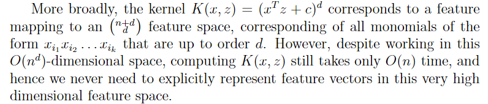</p>
<p>也就是通过核函数，你可以隐式地处理非常高维度的特征向量的数据。</p>
<p>我们讨论一下创造 kernels 的不同观点。从直觉理解来说，如果  和 $\phi (z) $ 距离很近，那么我们期望  值应该很大，反之如果  和 $\phi (z) $ 距离很远，则  值应该很小。因此我们认为，  应该是衡量   和 $\phi (z) $ 相似度的一个指标，或者  和  相似度的一个指标。</p>
<p>在这种直觉下，你可以用别的函数作为核函数，比如</p>
<p style=""></p><p>如果   和  很接近，那么这个核函数就接近 1 ，反之则接近 0 。那么这个函数能否作为核函数呢？答案是可以的，这个核函数称为 <strong>高斯核函数 (Gaussian kernel)</strong> ，因为可以找到相应的有限维度的特征映射  。</p>
<p>那么更进一步，给定某个函数  ，我们如何分辨这个函数是否为一个合法的核函数呢？也就是说，我们如何分辨对于函数  能否找到某个特征映射函数  ，使得   呢？</p>
<p>现在我们假设  就是一个合法的核函数，其特征映射为  。假设我们有一组  个样本点，定义一个  矩阵  ，其元素为  ，我们称这个矩阵为 <strong>核矩阵 (Kernel matrix)</strong> （这里用  这个符号同时表示核函数与核矩阵）。</p>
<p>由于  函数是一个合法的核函数，因此  ，即  矩阵是一个对阵矩阵。进一步，我们使用  表示  的第 k 个元素的值，我们发现对于任何向量  ，均存在：</p>
<p style=""></p><p>所以，K 矩阵是一个半正定矩阵（表示为  ）。</p>
<p>因此，我们证明了如果 K 函数是一个合法的核函数（对应某个特征映射 ），那么其相应的核矩阵就是一个<strong>对称半正定矩阵</strong>。事实上这是证明核函数的<strong>充分必要条件</strong>，称为 <strong>Mercer 定理</strong>。因此证明核函数只需要证明其对应的核矩阵就是一个对称半正定矩阵。举个例子，假设  ，那么这个 K 肯定不是一个合法的核函数 （）。</p>
<p>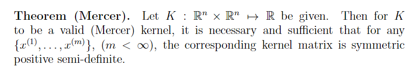</p>
<p>我们先来讨论几个例子，比如数字识别问题，输入为  的图像，输出为  的数字。 通过使用一个简单多项式的核函数 () 或高斯核函数，SVM 可以在这个问题表现很好。你仅仅需要将原来计算内积  的地方替换为  ，实际上这个过程就是你将原来的特征  替换为维度很高的特征  。</p>
<p>为什么我们要这么做呢？因为我们使用 SVM 就是为了解决<strong>非线性问题</strong>，实际上就是做了 feature engineer ，将无法线性可分的问题转到高纬度空间后变成了线性可分的问题。</p>
<h2 id="Regularization-and-the-non-separable-case">Regularization and the non-separable case</h2>
<p>之前对 SVM 的推导都是假设数据是<strong>线性可分的前提</strong>下，但是我们并不确定将数据转换为高纬度的特征空间就能使得数据线性可分。有些时候，我们也不想找一个线性可分的超平面，因为这很容易受到<strong>异常值</strong>的影响。举个例子，左图为最大间隔分类器结果，右图为在左上角新增了一个异常值的结果，我们发现分界线发生了很大的偏移，分类器的几何间隔变小。</p>
<p></p>
<p>为了使得这个算法可以满足<strong>非线性</strong>的情况，我们将优化目标改为下式（使用 L1 正则化）</p>
<p style=""></p><p>就像之前一样，我们可以使用拉格朗日乘子法</p>
<p style=""></p><p>这里的  和  是拉格朗日乘子。通过设定  和  的导数为 0 ，替换，简化，我们最终得到对偶形式如下：</p>
<p style=""></p><p>和上面一样 ， 可以表示为相同的  的表达式。我们发现通过增加 L1 正则项，唯一的改变仅仅是对偶问题的约束条件从 $ 0 \leq \alpha_{i}$ 改为  $ 0 \leq \alpha_{i} \leq C$ 。这里  的计算表达式发生了改变。</p>
<p>KKT 对偶互补条件为（缺证明，不理解）（我看 John Platt 的论文，这三个条件都是双向箭头）</p>
<p style=""></p><h2 id="The-SMO-algorithm">The SMO algorithm</h2>
<p><strong>The SMO (sequential minimal optimization)</strong> 算法是用来解决 SVM 的对偶问题的。让我们先中断一下，讨论一下 the coordinate ascent algorithm 。</p>
<h3 id="Coordinate-ascent">Coordinate ascent</h3>
<p>假设我们需要解决一个无约束的优化问题</p>
<p style=""></p><p>这里，我们认为  仅仅是关于参数  的函数。我们现在已经看到了两个优化算法，梯度下降和牛顿法。我们这里考虑的新算法称为 <strong>coordinate ascent (坐标上升)</strong> :</p>
<p>Loop until convergence: {<br>
For </p>
<p style=""></p><pre><code>\&#125;
</code></pre>
<p>}</p>
<p>因此，在每一次内部循环中，我们固定其他参数，只改变某个  ，使得  相对于   取得最大值。</p>
<p>举个例子如下图所示（这里是找最小值，也是一样的）</p>
<p>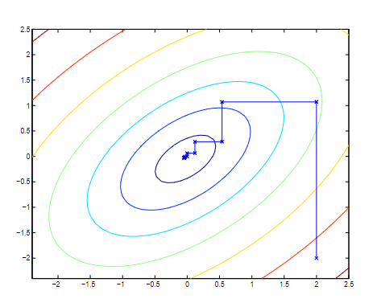</p>
<p>当固定其他参数，只对一个参数进行优化很容易时，<strong>坐标上升法</strong>就有优势。</p>
<h3 id="SMO">SMO</h3>
<p>首先，我们需要解决的对偶优化如下：</p>
<p style=""></p><p>如果我们有一组  满足上面的两个限制条件，那么我们能不能用 Coordinate ascent 方法每次优化其中一个参数（例如 ）呢？答案是否定的，因为限制条件使得</p>
<p style=""></p><p>因此，如果你固定了其他参数，那么   的值也就固定了，所以你每次至少要同时修改两个参数的值。这就产生了 SMO 算法，其简要概述如下：</p>
<blockquote>
<p>Repeat till convergence {</p>
<ol>
<li>Select some pair  and  to update next (using a heuristic that tries to pick the two that will allow us to make the biggest progress towards the global maximum)（括号里是啥？吴老师说启发式法则就是经验法则）.</li>
<li>Reoptimize  with respect to  and , while holding all the other  's  fixed.</li>
</ol>
<p>}</p>
</blockquote>
<p>为了检验这个算法是否收敛，我们可以查看上面的三个 KKT 互补条件是否在某个范围内满足 (the convergence tolerance parameter, 通常为 0.01 到 0.001 ) 。</p>
<p>SMO 是一个高效算法的主要理由是，它每一次更新   和  都非常迅速。让我们来看一下这个算法如何更新参数。假设我们将  固定，只针对   和  进行更新 。 首先，存在限制条件：</p>
<p style=""></p><p>右手项是一个固定的常数，我们将其表示为 </p>
<p style=""></p><p>我们可以画出    和   的限制条件，首先我们已知    和  必须在  正方形中，其次它们必须在   这条线上，也就是说    和   必须在正方形中的某个线段上。</p>
<p>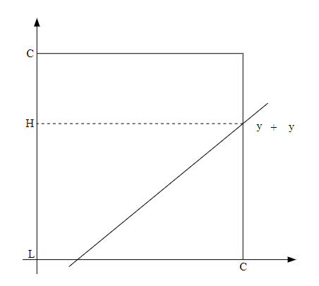</p>
<p>我们可以将  写成   的式子 (由于  只能是 -1 和 1，因此其倒数等于本身，利用这个性质化简得到下式)</p>
<p style=""></p><p>而     我们可以找到其相应的定义域 （）。因此，我们可以将  写成下式：</p>
<p style=""></p><p>将  视为常数，因此这是一个关于  的一元二次函数，可以表示为  ，也就是转化为求这个二次函数在定义域  的最大值，这就很简单了。</p>
<h1>经验风险最小化</h1>
<h2 id="The-Bias-Variance-Tradeoff">The Bias-Variance Tradeoff</h2>
<p>假设你用训练集拟合线性回归的参数，你想用<strong>测试集</strong>来验证效果，得到 MSE</p>
<p style=""></p><p>如果测试集的 MSE 特别高，可能的解释如下</p>
<blockquote>
<ul>
<li>Overfitting: the model is too closely related to the examples in the training set and doesn’t generalize well to other examples.</li>
<li>Underfitting: the model didn’t gather enough information from the training set, and doesn’t capture the link between the features  and the target .</li>
<li>The data is simply noisy, that is the model is neither overfitting or underfitting, and the high MSE is simply due to the amount of noise in the dataset.</li>
</ul>
</blockquote>
<p>假设<strong>训练集和测试集的所有样本点均来自于一个相似的分布</strong>，即存在：</p>
<p style=""></p><p>然后你的目的是计算  。通过使用你的训练集数据，你得到了一个估计函数  ，这个估计函数  是随机的，因为它取决于训练集的残差，因此这就是为什么我们说存在偏差   和   的方差。</p>
<p>我们现在可以计算测试集的 MSE 如下：</p>
<p style=""></p><p>我们对这里的第一项噪音方差无法改善，因为根据定义，我们无法预测噪音  。bias 项来自于欠拟合，表示平均而言， 与  的偏差。最后一项与过拟合紧密相关， 随着训练集数据的改变而有较大变动。</p>
<p>总结一下，我们可以将测试集 MSE 拆分为：</p>
<p style=""></p><h2 id="Error-Analysis">Error Analysis</h2>
<p>虽然知道我们的算法是高偏差还是高方差很重要，但是更重要的是到底是算法的那一部分导致了这个问题。</p>
<p>假设你创建一个复杂的 AI pipeline , 你想知道到底那一部分影响最大。我们可以对每一部分组件输入<strong>真值</strong>，查看准确性变化程度。比如在人脸识别的项目中，你通过跳过背景移除的步骤，直接输入手动剔除背景的真值，发现整体准确率提高了 0.1% ，这就是背景移除这一步优化的<strong>上限</strong>，也是就是说无论你的算法在这一步做的多好，整体准确率最多也就提高 0.1% 。</p>
<p>然后我们接着跳过第二步，一直到最后一步，使得整体准确性为 100% ，如下表所示：</p>
<p>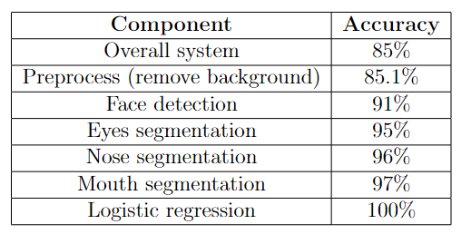</p>
<h2 id="Ablative-analysis">Ablative analysis</h2>
<p>Ablative analysis 用于解释目前模型表型和要求的基准线之间差距的原因。假设你设计了一个反垃圾邮件的系统，你往逻辑回归中增加了很多巧妙地特征如下：</p>
<blockquote>
<ul>
<li>Spelling correction</li>
<li>Sender host features</li>
<li>Email header features</li>
<li>Email text parser features</li>
<li>Javascript parser</li>
<li>Features from embedded images</li>
</ul>
</blockquote>
<p>那么我们的问题是：每一个组分到底帮助有多大呢？</p>
<p>假设我们不加上面这些特征的总体准确性是 94% ，加了这些特征之后是 99.9% 。在 ablative analysis 中，我们反过来做，我们从添加了所有特征的模型中逐个逐个将这些特征移除，参看准确性如何变化，见下表。</p>
<p>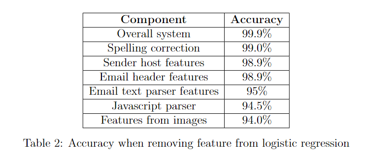</p>
<p>从这里你可以看出来，哪些特征更加重要。（问题来了，那我们逐个逐个添加特征应该效果是一样的吧）</p>
<h2 id="Analyze-your-mistakes">Analyze your mistakes</h2>
<p>查看哪些分错的样本，你可以知道你是不是遗漏了什么东西。</p>
<p>总结一下，不要浪费时间在哪些几乎不会降低错误率的组分，把时间花在刀刃上，也就是可以大幅降低错误率的组分。</p>
<h2 id="Preliminaries">Preliminaries</h2>
<p>我们先看两个引理：</p>
<blockquote>
<p><strong>Lemma</strong>. (The union bound). Let  be  different events (that may not be independent). Then</p>
<p style=""></p><p>In probability theory, the union bound is usually stated as an axiom (and thus we won’t try to prove it), but it also makes intuitive sense: The probability of any one of  events happening is at most the sums of the probabilities of the  different events.</p>
<p><strong>Lemma. (Hoeffding inequality)</strong> Let  be  independent and identically distributed (iid) random variables drawn from a  distribution. I.e., , and . Let  be the mean of these random variables, and let any  be fixed. Then</p>
<p style=""></p></blockquote>
<p>第二个引理说明，只要  足够大，那么  与 真实值  差距很大的概率非常小。</p>
<p>通过这两个引理，我们可以证明学习理论中一些最重要的结论。为了简化问题，我们现在只考虑二分类问题，其中  ，但是我们这里所说的东西都可以适用于其他学习方法。</p>
<p>我们假设我们有一个大小为  的训练集   ，其中的样本  <strong>独立同分布</strong>于某个分布  。针对某个假设  ，我们定义训练集的误差为 （<strong>training error</strong>，或称为， <strong>empirical risk</strong>, <strong>empirical error</strong> ）</p>
<p style=""></p><p>这就是训练集中有多少比例的样本被错误分类了（ 的帽子一般表示估计值，这里表示对泛化误差的估计）。我们定义泛化误差（实际计算为验证群的误差）为：</p>
<p style=""></p><p>这个概率指，如果我们从这个分布    随机抽取一个新样本  ， 会将其错误分类的概率。</p>
<p>这里假设我们使用线性分类器，设定  。那么我们拟合参数  的一个合理的方法是什么呢？一种方式就是使得训练集误差最小，即</p>
<p style=""></p><p>我们称这个过程为 <strong>经验风险最小化 (empirical risk minimization, ERM)</strong> ，我们称 ERM 为最基础的学习算法（类似于逻辑回归这些算法可以视为 ERM 算法的近似算法）。</p>
<p>我们定义一个学习算法的 <strong>hypothesis class </strong> 为该算法所有可用的假设/函数。对于线性分类器，存在    。</p>
<p>ERM 算法就是从所有可用的假设中挑选训练集误差最小的假设，即：</p>
<p style=""></p><h2 id="The-case-of-finite-mathcal-H">The case of finite </h2>
<p>假设  <strong>hypothesis class </strong> 由有限的  个假设组成，即  。因此，ERM 算法就是从这   个假设中挑出训练集误差最小的一个。</p>
<p>我们希望对  的泛化误差有一定保证。因此我们需要证明两步，第一证明对于所有的  ，  都是   的可靠的估计值；第二，我们希望能得到泛化误差  的<strong>上限</strong>。</p>
<p>我们随便取一个假设， 。假设一个服从伯努利分布的随机向量  ，从  中随机抽取一个样本  ，我们设定  ，也就是说   表示是否会对样本进行错误分类。相似地，我们定义  。因为训练集样本服从独立同分布，因此  和  服从相同的分布。</p>
<p>因此，  就是  () 的期望值（）。进一步的说，训练集误差可以写为</p>
<p style=""></p><p>因此，训练集误差的期望就是泛化误差。</p>
<p style=""></p><p>采用霍夫丁不等式，存在</p>
<p style=""></p><p>这说明，对于某个假设  ，<strong>如果  很大</strong>，那么训练集误差和泛化误差大概率很接近。但是我们不仅是想看某一个  存在训练集误差和泛化误差大概率很接近  ，我们想证明这同时对于所有的  均成立。为了简化写法，我们设  表示  这个<strong>事件</strong>。我们已经知道，对于任何一个   ，均存在  。因此，使用 union bound 定理，我们有</p>
<p style=""></p><p>如果两边都用 1减去原式，我们得到</p>
<p style=""></p><p>因此，至少有   的概率，对于所有  ，均有   与   的差距小于  。这称为一个  <em>uniform convergence result</em> ，因为这是对于所有的   均同时成立的一个边界。这里有三个我们感兴趣的参数： ，错误概率 ( ) 。给定其中两个值，我们可以计算出另外一个。</p>
<p>举个例子，假设给定某个  和某个  ，那么我们需要多大的m呢？通过代入   ，你就得到下式，这个式子同样称为<strong>样本复杂度 (sample complexity)</strong>。我们注意到这个式子仅仅是关于假设数目  的函数，这一点后面会用到。</p>
<p style=""></p><p>相似地，如果我们固定  和  ，然后求解  ，我们可以得到</p>
<p style=""></p><p>这里我们回顾一下，我们从训练集中选择训练集误差最低的假设  ，另外假设我们有无穷多的训练集数据，我们能找到真正的最好的假设  。</p>
<p style=""></p><p style=""></p><p>我们有</p>
<p style=""></p><p>因此，我们发现，在 <em>uniform convergence</em> 发生的前提下， 的泛化误差比  中最好的模型的泛化误差最多差  。</p>
<p>让我们将这些整理成一个定理</p>
<blockquote>
<p><strong>Theorem</strong>. Let , and let any  be fixed. Then with probability at least , we have that</p>
</blockquote>
<p style=""></p><p>这里将  改为了根号项。这个式子同时可以定量说明 bias-variance tradeoff ，假设我们从一个假设集合  转向了一个更大的假设集合  ，我们可以想到上面式子的第一项只会下降（因为我们是从一个更大的函数集合取最小值），因此通过使用一个更大的假设集合我们的 “bias&quot; 会下降。但是此时  会增加，因此第二项会增加，对应于我们的 ”variance&quot; 会增加。</p>
<p>通过固定  和  ，然后像上面一样计算  ，我们可以得到下面的样本复杂度 (这不是和上面一样嘛)。</p>
<blockquote>
<p>Corollary. Let , and let any  be fixed. Then for   to hold with probability at least , it suffices that</p>
</blockquote>
<p style=""></p><h1>特征选择</h1>
<h2 id="The-case-of-infinite-mathcal-H">The case of infinite </h2>
<p>我们上面证明了一些有限假设集合的性质，但是很多假设集合实际上包含了无限个函数，我们能得到相似的结果嘛？</p>
<p>让我们先看一些不是很对的论述，帮助我们直观理解。假设我们有一个通过  个参数确定的假设集合  。假设在电脑里我们用双精度保存浮点数，也就是 64 位。因此，我们的假设实际包含最多  个不同的假设。根据上面最后的推论，我们因此发行，为了确保  在至少  的概率下成立，我们有  （这里的  下标表示这里的  函隐藏了关于   的常数 ）。因此，需要的训练集样本的数目和模型参数数目是线性关系。</p>
<p>为了推导一些更一般的结论，我们需要先定义一些东西。</p>
<p>假设有一个与训练集无关的集合  ，其中  （不知道  是啥），我们称  ，如果  可以实现  上任何一种标签形式。也就是说，对于任何一个标签集合 , 均存在某个  使得  针对所有  均成立。</p>
<p>给定一个假设集合  ，我们定义它的 <strong>Vapnik-Chervonenkis dimension</strong> ，写作  ，为    可以 shattered 的最大集合的维度。如果    可以shatter 任意大的集合，那么称   。</p>
<p>举个例子，考虑下面这三个点的集合</p>
<p>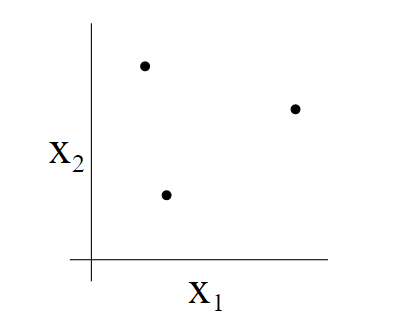</p>
<p>那么一个二维的线性分类器  ( )  能不能 shatter 上面这个集合呢？答案是可以的。如下图，对于上面这三个点的任何一种标签，我们都可以找到一种线性分类器将它们完美分开。</p>
<p>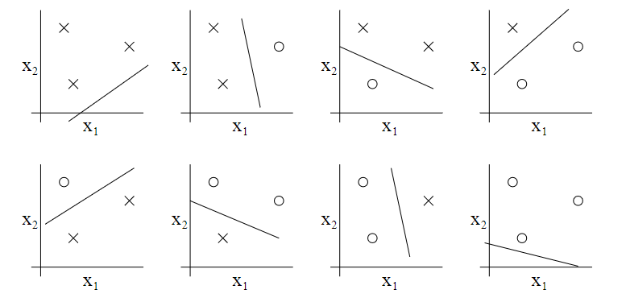</p>
<p>进一步，我们发现，没有一个由4个点组成的集合，能够被这个假设 shatter 。因此，这个假设最大能 shatter 的集合维度为 3 ， 即  。</p>
<p>注意，这里说  仅仅是说存在维度为3的集合能够被上面的假设 shatter ，而不是所有的维度为3的集合均能被 shatter ，比如如果这 3 个点排成一条直线就不能被 shatter</p>
<p>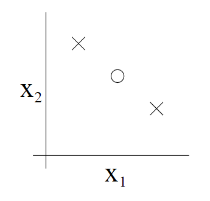</p>
<p>也就是说，为了证明  至少是  ，我们只需要证明存在一个维度为 d 的集合能够被   shatter 。</p>
<p>从 Vapnik 这里，我们得到下面这个定理</p>
<p>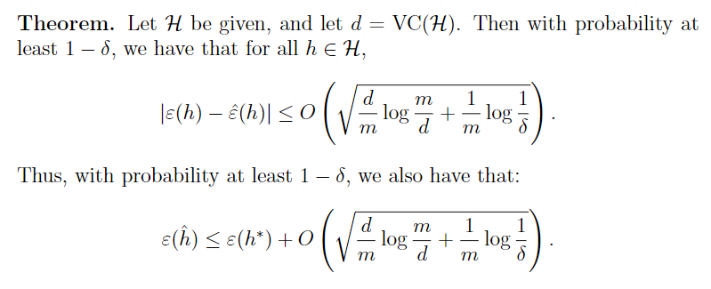</p>
<p>因此，如果一个假设集合存在一个有限的 VC 维度，那么只要  很大，那么 <em>uniform convergence</em> 同样成立。和之前一样，我们可以给  一个基于  的边界，上面第二个式子其实应该是 2 乘以  式子，这里由于用  函数省略了这个 2 。</p>
<p>我们同时有下面这个推论（怎么得到的？我的理解是通过  这个式子求  ，但是我不会求 ）</p>
<p>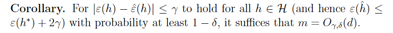</p>
<p>换句话说，如果想通过  训练出一个很好的模型（训练集误差和泛化误差很接近），<strong>需要的训练集样本数目与 VC 维度成正比</strong>。而对于大多数模型，VC 维度往往和参数数目成正比。因此我们得到结果，训练集样本数目通常需要和  的参数数目呈线性关系。</p>
<h2 id="Regularization-and-model-selection">Regularization and model selection</h2>
<h3 id="Cross-validation">Cross validation</h3>
<p>第一种交叉验证方法称为 <strong>hold-out cross validation</strong> ，或者称为简单交叉验证。就是你随机将数据分为训练集（比如 70%）和验证集（剩下的 30%），你用训练集拟合模型，然后用验证集进行模型选择。选择好要使用的模型后，一般最后再用全部数据重新拟合一下参数。</p>
<p>这种方法的缺点在于 “浪费” 了这 30% 的数据，因为在选择模型时我们只用了 70% 的数据用来拟合模型。如果我们的数据量非常大或者数据收集很容易，这种做法没问题。反之，我们可能希望有更好的方法。</p>
<p>第二种交叉验证方法称为 <strong>k-fold cross validation</strong> ，一般我们会取 k = 10（此时，每次你使用了 90% 的数据来拟合模型，比上面用到的数据更多。） 。如果 k = m，此时这种方法有一个单独的名字，<strong>leave-one-out cross validation</strong> 。</p>
<h3 id="Feature-Selection">Feature Selection</h3>
<p>模型选择一个特殊且重要的例子是特征选择。假设你现在有一个监督学习问题，特征数目 n 非常大 (可能  ) ，但是你认为这里只有一小部分特征和反应变量有关。这里你即便用一个线性分类器来拟合这 n 个参数，你的假设集合的 VC 维度仍然是  ，<strong>因此除非训练集非常大，不然就很有可能过拟合</strong>。</p>
<p>在这种情况下，你可以需要先用一个<strong>特征选择</strong>算法来剔除一些特征。当有 n 个特征时，总共有  可能的特征子集合，因此特征选择可以视为对   个可能的模型的模型选择。当 n 很大时，我们几乎无法对所有的   个可能的模型进行拟合和遍历，所以我们需要一些启发式地算法来查找一个不错的特征子集合。下面的过程称为 <strong>向前选择 (forward search)</strong> :</p>
<p>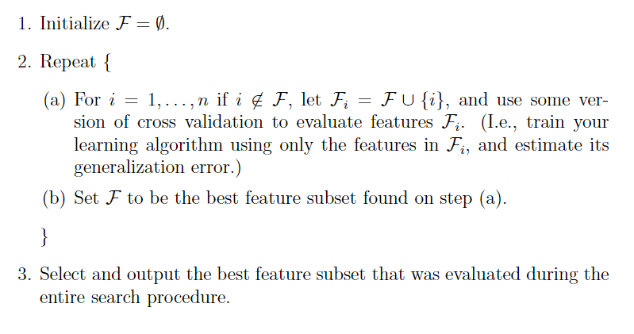</p>
<p>这里第二步外层循环的终止条件可以是 $ \mathcal{F} = {1, \cdots, n}$ ，也就是所有特征的集合，或当参数个体超过你自己设定的阈值时终止。第三步是说还需要用交叉验证选择第二步中特征数量从 1 到 n （或者你设定的参数阈值）的所有模型中的最佳模型（感觉通过画个图来选择特征数量更清晰）。</p>
<p>向前选择是<strong>封装特征选择 (wrapper model feature selection)</strong> 的一个例子。封装的意思就是说，你需要一直拟合不同的特征子集合组成的模型。除了向前选择外，我们还有其他的方法可以选择。比如，<strong>向后选择 (backward search)</strong> 从  出发，每次迭代均剔除一个特征（方法和向前选择一样）直到  。</p>
<p><strong>封装特征选择通常效果很好（虽然找到的不一定是最优解），但是计算量非常大</strong>，因为需要不断地拟合模型。实际上，对 n 个特征采用向前选择需要拟合  次模型。</p>
<p><strong>过滤式特征选择 (Filter feature selection)</strong> 模型采用一种启发式的，计算量非常小的选择特征的方式。其实现就是采用某种简单的评分  ，用于衡量每个特征  对于标签  的影响程度。之后我们就只需要挑选具有最大评分的前  个特征即可。</p>
<p>评分的一种选择是训练集  <strong> 和  的相关系数的绝对值</strong>。实际上，更普遍的选择是<strong>相互信息 (mutual information)</strong>  ，特别是对于离散特征  。下式中认为   是二分类，但是多分类也可以，式子中的概率均通过训练集数据得到。</p>
<p style=""></p><p>事实上，相互信息就是信息论中的 Kullback-Leibler (KL) divergence: （没学过，可以理解为  之间的距离，如果   和  彼此独立，那么， 他们的 KL 距离就是 0；如果   和   关联度很高，那么它们的 KL 距离就很大）</p>
<p style=""></p><p>最后一个问题，选取前  个特征中的  最后通过交叉验证来得到。</p>
 
      <!-- reward -->
      
    </div>
    

    <!-- copyright -->
    
    <div class="declare">
      <ul class="post-copyright">
        <li>
          <i class="ri-copyright-line"></i>
          <strong>版权声明： </strong>
          
          本博客所有文章除特别声明外，著作权归作者所有。转载请注明出处！
          
        </li>
      </ul>
    </div>
    
    <footer class="article-footer">
       
<div class="share-btn">
      <span class="share-sns share-outer">
        <i class="ri-share-forward-line"></i>
        分享
      </span>
      <div class="share-wrap">
        <i class="arrow"></i>
        <div class="share-icons">
          
          <a class="weibo share-sns" href="javascript:;" data-type="weibo">
            <i class="ri-weibo-fill"></i>
          </a>
          <a class="weixin share-sns wxFab" href="javascript:;" data-type="weixin">
            <i class="ri-wechat-fill"></i>
          </a>
          <a class="qq share-sns" href="javascript:;" data-type="qq">
            <i class="ri-qq-fill"></i>
          </a>
          <a class="douban share-sns" href="javascript:;" data-type="douban">
            <i class="ri-douban-line"></i>
          </a>
          <!-- <a class="qzone share-sns" href="javascript:;" data-type="qzone">
            <i class="icon icon-qzone"></i>
          </a> -->
          
          <a class="facebook share-sns" href="javascript:;" data-type="facebook">
            <i class="ri-facebook-circle-fill"></i>
          </a>
          <a class="twitter share-sns" href="javascript:;" data-type="twitter">
            <i class="ri-twitter-fill"></i>
          </a>
          <a class="google share-sns" href="javascript:;" data-type="google">
            <i class="ri-google-fill"></i>
          </a>
        </div>
      </div>
</div>

<div class="wx-share-modal">
    <a class="modal-close" href="javascript:;"><i class="ri-close-circle-line"></i></a>
    <p>扫一扫，分享到微信</p>
    <div class="wx-qrcode">
      
    </div>
</div>

<div id="share-mask"></div>  
  <ul class="article-tag-list" itemprop="keywords"><li class="article-tag-list-item"><a class="article-tag-list-link" href="/tags/%E6%9C%BA%E5%99%A8%E5%AD%A6%E4%B9%A0/" rel="tag">机器学习</a></li><li class="article-tag-list-item"><a class="article-tag-list-link" href="/tags/%E7%90%86%E8%AE%BA%E5%AD%A6%E4%B9%A0/" rel="tag">理论学习</a></li></ul>

    </footer>
  </div>

   
  <nav class="article-nav">
    
    
      <a href="/posts/cdd811e7/" class="article-nav-link">
        <strong class="article-nav-caption">下一篇</strong>
        <div class="article-nav-title">AB=I证明BA=I</div>
      </a>
    
  </nav>

  
   
     
</article>

</section>
      <footer class="footer">
  <div class="outer">
    <ul>
      <li>
        Copyrights &copy;
        2019-2021
        <i class="ri-heart-fill heart_icon"></i> Vincere Zhou
      </li>
    </ul>
    <ul>
      <li>
        
        
        <span>
  <span><i class="ri-user-3-fill"></i>访问人数:<span id="busuanzi_value_site_uv"></span></s>
  <span class="division">|</span>
  <span><i class="ri-eye-fill"></i>浏览次数:<span id="busuanzi_value_page_pv"></span></span>
</span>
        
      </li>
    </ul>
    <ul>
      
    </ul>
    <ul>
      
    </ul>
    <ul>
      <li>
        <!-- cnzz统计 -->
        
      </li>
    </ul>

    <!-- 与只只在一起天数 -->
	<ul>
		<li><span id="lovetime_span"></span></li>
	</ul>
    <script type="text/javascript">			
        function show_runtime() {
            window.setTimeout("show_runtime()", 1000);
            X = new Date("03/04/2021 22:11:00");
            Y = new Date();
            T = (Y.getTime() - X.getTime());
            M = 24 * 60 * 60 * 1000;
            a = T / M;
            A = Math.floor(a);
            b = (a - A) * 24;
            B = Math.floor(b);
            c = (b - B) * 60;
            C = Math.floor((b - B) * 60);
            D = Math.floor((c - C) * 60);
            lovetime_span.innerHTML = "只只和男朋友在一起了 " + A + "天" + B + "小时" + C + "分" + D + "秒"
        }
        show_runtime();
    </script>

  </div>
</footer>
      <div class="float_btns">
        <div class="totop" id="totop">
  <i class="ri-arrow-up-line"></i>
</div>

<div class="todark" id="todark">
  <i class="ri-moon-line"></i>
</div>

      </div>
    </main>
    <aside class="sidebar on">
      <button class="navbar-toggle"></button>
<nav class="navbar">
  
  <div class="logo">
    <a href="/"></a>
  </div>
  
  <ul class="nav nav-main">
    
    <li class="nav-item">
      <a class="nav-item-link" href="/">主页</a>
    </li>
    
    <li class="nav-item">
      <a class="nav-item-link" href="/archives">归档</a>
    </li>
    
    <li class="nav-item">
      <a class="nav-item-link" href="/categories">分类</a>
    </li>
    
    <li class="nav-item">
      <a class="nav-item-link" href="/tags">标签</a>
    </li>
    
    <li class="nav-item">
      <a class="nav-item-link" href="/friends">友链</a>
    </li>
    
    <li class="nav-item">
      <a class="nav-item-link" href="/posts/ac7827ff">只只</a>
    </li>
    
    <li class="nav-item">
      <a class="nav-item-link" href="/about">关于</a>
    </li>
    
  </ul>
</nav>
<nav class="navbar navbar-bottom">
  <ul class="nav">
    <li class="nav-item">
      
      <a class="nav-item-link nav-item-search"  title="搜索">
        <i class="ri-search-line"></i>
      </a>
      
      
      <a class="nav-item-link" target="_blank" href="/atom.xml" title="RSS Feed">
        <i class="ri-rss-line"></i>
      </a>
      
    </li>
  </ul>
</nav>
<div class="search-form-wrap">
  <div class="local-search local-search-plugin">
  <input type="search" id="local-search-input" class="local-search-input" placeholder="Search...">
  <div id="local-search-result" class="local-search-result"></div>
</div>
</div>
    </aside>
    <script>
      if (window.matchMedia("(max-width: 768px)").matches) {
        document.querySelector('.content').classList.remove('on');
        document.querySelector('.sidebar').classList.remove('on');
      }
    </script>
    <div id="mask"></div>

<!-- #reward -->
<div id="reward">
  <span class="close"><i class="ri-close-line"></i></span>
  <p class="reward-p"><i class="ri-cup-line"></i>请我喝杯咖啡吧~</p>
  <div class="reward-box">
    
    <div class="reward-item">
      
      <span class="reward-type">支付宝</span>
    </div>
    
    
    <div class="reward-item">
      
      <span class="reward-type">微信</span>
    </div>
    
  </div>
</div>
    
<script src="/js/jquery-2.0.3.min.js"></script>


<script src="/js/lazyload.min.js"></script>

<!-- Tocbot -->


<script src="/js/tocbot.min.js"></script>

<script>
  tocbot.init({
    tocSelector: '.tocbot',
    contentSelector: '.article-entry',
    headingSelector: 'h1, h2, h3, h4, h5, h6',
    hasInnerContainers: true,
    scrollSmooth: true,
    scrollContainer: 'main',
    positionFixedSelector: '.tocbot',
    positionFixedClass: 'is-position-fixed',
    fixedSidebarOffset: 'auto'
  });
</script>

<script src="https://cdn.jsdelivr.net/npm/jquery-modal@0.9.2/jquery.modal.min.js"></script>
<link rel="stylesheet" href="https://cdn.jsdelivr.net/npm/jquery-modal@0.9.2/jquery.modal.min.css">
<script src="https://cdn.jsdelivr.net/npm/justifiedGallery@3.7.0/dist/js/jquery.justifiedGallery.min.js"></script>

<script src="/dist/main.js"></script>

<!-- ImageViewer -->

<!-- Root element of PhotoSwipe. Must have class pswp. -->
<div class="pswp" tabindex="-1" role="dialog" aria-hidden="true">

    <!-- Background of PhotoSwipe. 
         It's a separate element as animating opacity is faster than rgba(). -->
    <div class="pswp__bg"></div>

    <!-- Slides wrapper with overflow:hidden. -->
    <div class="pswp__scroll-wrap">

        <!-- Container that holds slides. 
            PhotoSwipe keeps only 3 of them in the DOM to save memory.
            Don't modify these 3 pswp__item elements, data is added later on. -->
        <div class="pswp__container">
            <div class="pswp__item"></div>
            <div class="pswp__item"></div>
            <div class="pswp__item"></div>
        </div>

        <!-- Default (PhotoSwipeUI_Default) interface on top of sliding area. Can be changed. -->
        <div class="pswp__ui pswp__ui--hidden">

            <div class="pswp__top-bar">

                <!--  Controls are self-explanatory. Order can be changed. -->

                <div class="pswp__counter"></div>

                <button class="pswp__button pswp__button--close" title="Close (Esc)"></button>

                <button class="pswp__button pswp__button--share" style="display:none" title="Share"></button>

                <button class="pswp__button pswp__button--fs" title="Toggle fullscreen"></button>

                <button class="pswp__button pswp__button--zoom" title="Zoom in/out"></button>

                <!-- Preloader demo http://codepen.io/dimsemenov/pen/yyBWoR -->
                <!-- element will get class pswp__preloader--active when preloader is running -->
                <div class="pswp__preloader">
                    <div class="pswp__preloader__icn">
                        <div class="pswp__preloader__cut">
                            <div class="pswp__preloader__donut"></div>
                        </div>
                    </div>
                </div>
            </div>

            <div class="pswp__share-modal pswp__share-modal--hidden pswp__single-tap">
                <div class="pswp__share-tooltip"></div>
            </div>

            <button class="pswp__button pswp__button--arrow--left" title="Previous (arrow left)">
            </button>

            <button class="pswp__button pswp__button--arrow--right" title="Next (arrow right)">
            </button>

            <div class="pswp__caption">
                <div class="pswp__caption__center"></div>
            </div>

        </div>

    </div>

</div>

<link rel="stylesheet" href="https://cdn.jsdelivr.net/npm/photoswipe@4.1.3/dist/photoswipe.min.css">
<link rel="stylesheet" href="https://cdn.jsdelivr.net/npm/photoswipe@4.1.3/dist/default-skin/default-skin.min.css">
<script src="https://cdn.jsdelivr.net/npm/photoswipe@4.1.3/dist/photoswipe.min.js"></script>
<script src="https://cdn.jsdelivr.net/npm/photoswipe@4.1.3/dist/photoswipe-ui-default.min.js"></script>

<script>
    function viewer_init() {
        let pswpElement = document.querySelectorAll('.pswp')[0];
        let $imgArr = document.querySelectorAll(('.article-entry img:not(.reward-img)'))

        $imgArr.forEach(($em, i) => {
            $em.onclick = () => {
                // slider展开状态
                // todo: 这样不好，后面改成状态
                if (document.querySelector('.left-col.show')) return
                let items = []
                $imgArr.forEach(($em2, i2) => {
                    let img = $em2.getAttribute('data-idx', i2)
                    let src = $em2.getAttribute('data-target') || $em2.getAttribute('src')
                    let title = $em2.getAttribute('alt')
                    // 获得原图尺寸
                    const image = new Image()
                    image.src = src
                    items.push({
                        src: src,
                        w: image.width || $em2.width,
                        h: image.height || $em2.height,
                        title: title
                    })
                })
                var gallery = new PhotoSwipe(pswpElement, PhotoSwipeUI_Default, items, {
                    index: parseInt(i)
                });
                gallery.init()
            }
        })
    }
    viewer_init()
</script>

<!-- MathJax -->

<script type="text/x-mathjax-config">
  MathJax.Hub.Config({
      tex2jax: {
          inlineMath: [ ['$','$'], ["\\(","\\)"]  ],
          processEscapes: true,
          skipTags: ['script', 'noscript', 'style', 'textarea', 'pre', 'code']
      }
  });

  MathJax.Hub.Queue(function() {
      var all = MathJax.Hub.getAllJax(), i;
      for(i=0; i < all.length; i += 1) {
          all[i].SourceElement().parentNode.className += ' has-jax';
      }
  });
</script>

<script src="https://cdn.jsdelivr.net/npm/mathjax@2.7.6/unpacked/MathJax.js?config=TeX-AMS-MML_HTMLorMML"></script>
<script>
  var ayerConfig = {
    mathjax: true
  }
</script>

<!-- Katex -->

<!-- busuanzi  -->


<script src="/js/busuanzi-2.3.pure.min.js"></script>


<!-- ClickLove -->

<!-- ClickBoom1 -->

<!-- ClickBoom2 -->

<!-- CodeCopy -->


<link rel="stylesheet" href="/css/clipboard.css">

<script src="https://cdn.jsdelivr.net/npm/clipboard@2/dist/clipboard.min.js"></script>
<script>
  function wait(callback, seconds) {
    var timelag = null;
    timelag = window.setTimeout(callback, seconds);
  }
  !function (e, t, a) {
    var initCopyCode = function(){
      var copyHtml = '';
      copyHtml += '<button class="btn-copy" data-clipboard-snippet="">';
      copyHtml += '<i class="ri-file-copy-2-line"></i><span>COPY</span>';
      copyHtml += '</button>';
      $(".highlight .code pre").before(copyHtml);
      $(".article pre code").before(copyHtml);
      var clipboard = new ClipboardJS('.btn-copy', {
        target: function(trigger) {
          return trigger.nextElementSibling;
        }
      });
      clipboard.on('success', function(e) {
        let $btn = $(e.trigger);
        $btn.addClass('copied');
        let $icon = $($btn.find('i'));
        $icon.removeClass('ri-file-copy-2-line');
        $icon.addClass('ri-checkbox-circle-line');
        let $span = $($btn.find('span'));
        $span[0].innerText = 'COPIED';
        
        wait(function () { // 等待两秒钟后恢复
          $icon.removeClass('ri-checkbox-circle-line');
          $icon.addClass('ri-file-copy-2-line');
          $span[0].innerText = 'COPY';
        }, 2000);
      });
      clipboard.on('error', function(e) {
        e.clearSelection();
        let $btn = $(e.trigger);
        $btn.addClass('copy-failed');
        let $icon = $($btn.find('i'));
        $icon.removeClass('ri-file-copy-2-line');
        $icon.addClass('ri-time-line');
        let $span = $($btn.find('span'));
        $span[0].innerText = 'COPY FAILED';
        
        wait(function () { // 等待两秒钟后恢复
          $icon.removeClass('ri-time-line');
          $icon.addClass('ri-file-copy-2-line');
          $span[0].innerText = 'COPY';
        }, 2000);
      });
    }
    initCopyCode();
  }(window, document);
</script>


<!-- CanvasBackground -->


    
  </div>
<script src="/live2dw/lib/L2Dwidget.min.js?094cbace49a39548bed64abff5988b05"></script><script>L2Dwidget.init({"pluginRootPath":"live2dw/","pluginJsPath":"lib/","pluginModelPath":"assets/","tagMode":false,"debug":false,"model":{"jsonPath":"live2d-widget-model-wanko"},"display":{"position":"left","width":150,"height":300,"hOffset":80,"vOffset":-70},"mobile":{"show":false,"scale":0.5},"log":false});</script></body>

</html>